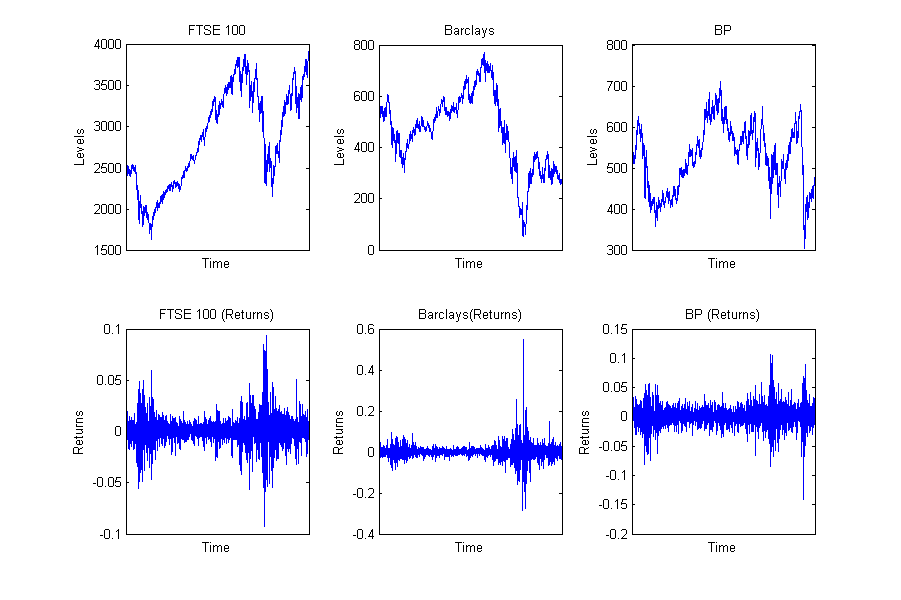
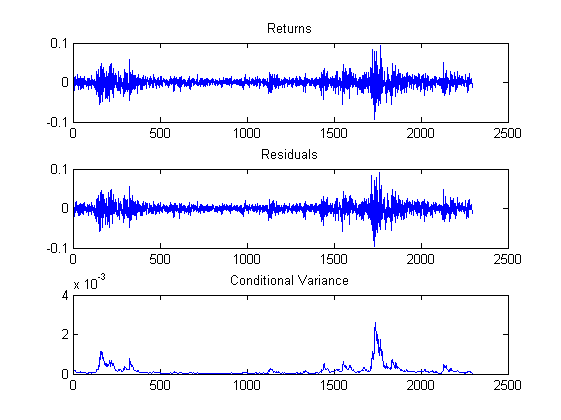
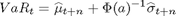
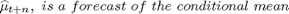
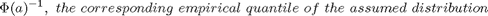
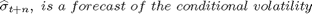
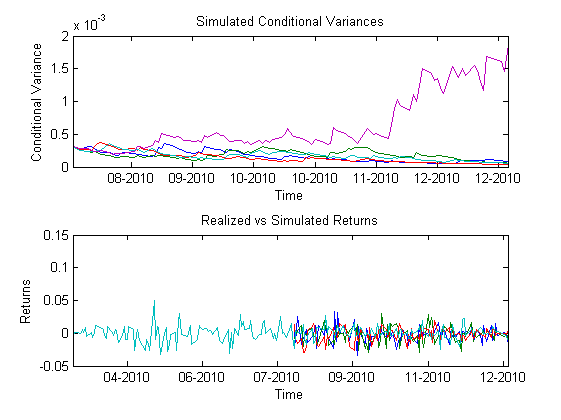
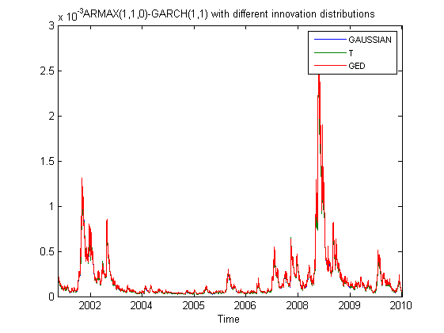
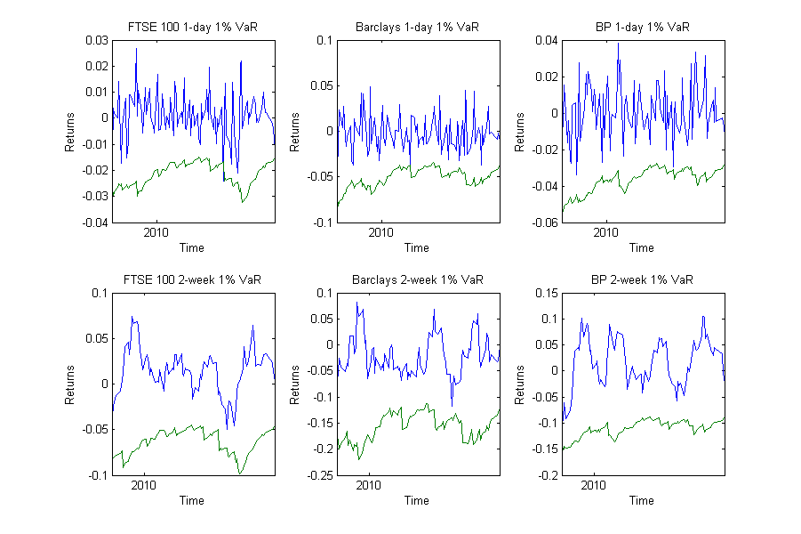
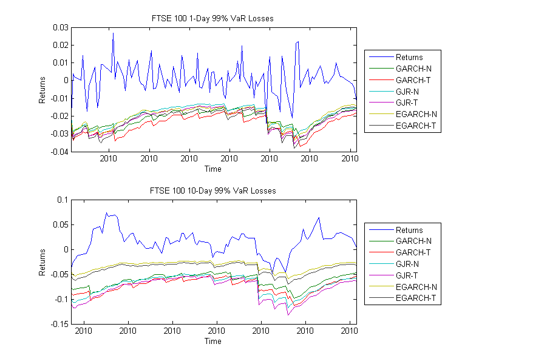

Contents
- Applications
- Ordinary Least Square Regression
- Estimating GARCH models
- Forecasting Volatility
- Estimating Value-at-Risk
- GARCH Simulation
- Comparing the conditional variance with different innovation distributions
- Finding the best model to fit the distributional characteristics
- Applications in Volatility Forecasting & Value-at-Risk
- Return to Main
Applications
The following examples will guide you through some of the functionality built in this toolbox. Specifically, how to estimate the models, forecast, simulate and find the best model that fits your data set based on a set of criteria.
The data used for the examples are daily prices of the FTSE 100 index, Barclays and BP for the period from 03/01/2000 to 31/12/2010, which is available from finance.yahoo.com.
clc clear % Import of data load('data.mat'); % Estimate the continious returns of the series data = price2ret(levels,[],'Continuous'); % Convert the dates to serial date number dates = datenum(cell2mat(levelsdates(3:end)), 'dd/mm/yyyy'); % Plot the levels and returns of FTSE 100, Barclays and BP figure subplot(2,3,1), plot(dates,levels(2:end,1)); datetick('x','yyyy','keepticks'); xlim([dates(1), dates(end)]); title('FTSE 100');xlabel('Time'); ylabel('Levels'); subplot(2,3,2), plot(dates,levels(2:end,2)); datetick('x','yyyy','keepticks'); xlim([dates(1), dates(end)]); title('Barclays'); xlabel('Time');ylabel('Levels'); subplot(2,3,3), plot(dates,levels(2:end,3)); datetick('x','yyyy','keepticks'); xlim([dates(1), dates(end)]); title('BP'); xlabel('Time');ylabel('Levels'); subplot(2,3,4), plot(dates,data(:,1)); datetick('x','yyyy','keepticks'); xlim([dates(1), dates(end)]); title('FTSE 100 (Returns)'); xlabel('Time'); ylabel('Returns'); subplot(2,3,5), plot(dates,data(:,2)); datetick('x','yyyy','keepticks'); xlim([dates(1), dates(end)]); title('Barclays(Returns)'); xlabel('Time'); ylabel('Returns'); subplot(2,3,6), plot(dates,data(:,3)); datetick('x','yyyy','keepticks'); xlim([dates(1), dates(end)]); title('BP (Returns)'); xlabel('Time'); ylabel('Returns'); set(gcf,'Position',[100,100,900,600]) snapnow; close(gcf) % Some other options warning('off', 'MATLAB:nearlySingularMatrix');
Ordinary Least Square Regression
To estimate a simple ordinary least square regression the garch function is applied. Lets assume we regress the Barclays and BP on the FTSE 100 index. The results reveal that the both Barclays and BP are positive and statistical significant and are able to explain 68% of the variation in the FTSE 100.
[parameters, stderrors, LLF, ht, resids, summary] = garch(data(:,1),'GARCH','GAUSSIAN',0,0,data(:,2:3),0,0,0,[],options);
------------------------------------------------- Specification: ARMAX(0,0,2) - GARCH(0,0,0) Distribution: Gaussian Normal Convergence achieved after 15 iterations ------------------------------------------------- Parameters Coefficients Std Errors T-stats ------------------------------------------------- C 0.0003 0.0002 1.6526 Factor1 0.1701 0.0051 33.146 Factor2 0.4156 0.0094 44.021 K 0.0001 0.0000 33.871 ------------------------------------------------- R-Squared: 0.6838 Adjusted R-Squared: 0.6833 Log Likelihood: 7982 Akaike Information Criteron: -15957 Bayesian Information Criteron: -15934 -------------------------------------------------
However, In case we wanted to incorporate past terms of the FTSE 100 then we can include AR(p) terms. For example the 1-day lag can be included as:
[parameters, stderrors, LLF, ht, resids, summary] = garch(data(:,1),'GARCH','GAUSSIAN',1,0,data(:,2:3),0,0,0,[],options);
------------------------------------------------- Specification: ARMAX(1,0,2) - GARCH(0,0,0) Distribution: Gaussian Normal Convergence achieved after 19 iterations ------------------------------------------------- Parameters Coefficients Std Errors T-stats ------------------------------------------------- C 0.0003 0.0002 1.7749 AR1 -0.0540 0.0119 -4.5540 Factor1 0.1717 0.0050 34.138 Factor2 0.4121 0.0093 44.409 K 0.0001 0.0000 33.833 ------------------------------------------------- R-Squared: 0.6868 Adjusted R-Squared: 0.6862 Log Likelihood: 7989 Akaike Information Criteron: -15969 Bayesian Information Criteron: -15940 -------------------------------------------------
Estimating GARCH models
This example illustrates how to estimate the ARMAX(1,1,0)-GARCH(1,1) model using the garch function, as well as plot the FTSE 100, its estimate variance and residuals using the garchplot function. The inputs are the GARCH model the distribution and the AR(1), MA(1), X(0), ARCH(1), GARCH(1), Y(0), followed with some additional options. The outputs contain the estimated parameters, standard errors, value of the loglikelihood function, conditional variance, residuals and summary of a variety of statistics such as robust standard errors and scores, among others.
[parameters, stderrors, LLF, ht, resids, summary] = garch(data(:,1),'GARCH', 'GAUSSIAN',1,1,0,1,1,0,[],options);
------------------------------------------------- Specification: ARMAX(1,1,0) - GARCH(1,1,0) Distribution: Gaussian Normal Convergence achieved after 37 iterations ------------------------------------------------- Parameters Coefficients Std Errors T-stats ------------------------------------------------- C 0.0005 0.0009 0.5343 AR1 0.1804 0.4948 0.3645 MA1 -0.2626 0.4882 -0.5379 K 0.0000 0.0000 3.7420 ARCH1 0.1028 0.0117 8.7595 GARCH1 0.8928 0.0112 79.414 ------------------------------------------------- R-Squared: 0.0058 Adjusted R-Squared: 0.0037 Log Likelihood: 7278 Akaike Information Criteron: -14544 Bayesian Information Criteron: -14510 -------------------------------------------------
garchplot(data(:,1),ht,resids)
However, we may also be interested to examine the impact of a number of factors on the volatility process. In our example the impact of Barclay on the volatility process of FTSE 100. Please note that to estimate a factor GARCH model the (y) factor vector needs to be positive. This means that the factor vectors will be squared.
y=data(:,2).^2; [parameters, stderrors, LLF, ht, resids, summary] = garch(data(:,1),'GARCH', 'GAUSSIAN',1,1,0,1,1,y,[],options);
------------------------------------------------- Specification: ARMAX(1,1,0) - GARCH(1,1,1) Distribution: Gaussian Normal Convergence achieved after 28 iterations ------------------------------------------------- Parameters Coefficients Std Errors T-stats ------------------------------------------------- C 0.0005 0.0002 2.7539 AR1 0.1802 0.2301 0.7832 MA1 -0.2537 0.2281 -1.1123 K 0.0000 0.0000 8.3239 ARCH1 0.0875 0.0209 4.1789 GARCH1 0.1223 0.0319 3.8375 Factor1 0.1710 0.0128 13.399 ------------------------------------------------- R-Squared: 0.0059 Adjusted R-Squared: 0.0032 Log Likelihood: 7460 Akaike Information Criteron: -14905 Bayesian Information Criteron: -14865 -------------------------------------------------
Forecasting Volatility
The garchfor and garchfor2 functions are applied to forecast the mean and volatility processes. The inputs of the functions are the GARCH model, distribution the number of forecasted periods. The difference between the two functions is that the former estimates the GARCH model whereas the later passes the already estimated parameters to the function. In this example we will forecast 10 days ahead using the ARMAX(1,1,0)-GARCH(1,1,0) model.The mean and volatility forecasts will be saved in the MF and VF vectors, and the cumulative (or multiperiod holdings) mean and volatility forecasts in MC and VC respectively:
[MF, VF, MC, VC] = garchfor2(data(:,1), resids, ht, parameters, 'GARCH', 'GAUSSIAN',1,1,1,1,10); [MF,VF, MC, VC]
ans =
0.0030 0.0000 0.0030 0.0060
0.0003 0.0000 0.0033 0.0078
0.0005 0.0000 0.0037 0.0091
0.0004 0.0000 0.0042 0.0102
0.0004 0.0000 0.0046 0.0112
0.0004 0.0000 0.0050 0.0122
0.0004 0.0000 0.0055 0.0130
0.0004 0.0000 0.0059 0.0138
0.0004 0.0000 0.0064 0.0146
0.0004 0.0000 0.0068 0.0153
Estimating Value-at-Risk
The garchvar and garchvar2 functions are applied to estimate Value-at-Risk for for both long and short positions. The inputs of the functions are GARCH model, the distribution, the number of forecasted periods and a% losses. The VaR is estimated as:

where:
  .
In this exampe we will forecast 10 days ahead 99% VaR estimates using the ARMAX(0,0,0)-GARCH(1,1,0) model with gaussian innovation terms. The long and short positions will be saved in the VaR variable:
VaR99 = garchvar2(data(:,1),resids, ht, parameters, 'GARCH', 'GAUSSIAN', 1, 1, 1, 1, 10, 0.99); VaR99
VaR99 =
0.0170 -0.0110
0.0214 -0.0149
0.0249 -0.0175
0.0280 -0.0197
0.0308 -0.0216
0.0333 -0.0232
0.0358 -0.0248
0.0381 -0.0262
0.0403 -0.0275
0.0424 -0.0287
GARCH Simulation
The garchsim function is applied to simulate volatility and returns series. It's inputs are the GARCH parameters, model, distribution, the ARCH and GARCH effects, number of samples and number of paths. Additionally a vector of time series of positive pre-sample conditional standard deviations may be provided, which the variance model will be conditioned. Make sure however that this vector has sufficient observations in order to initialize the conditional variance process. The outputs are a vector of simulated returns with GARCH variances and a vector of conditional standard deviations. In this example we will simulate 5 paths of 100 days ahead based on the volatility estimate at date 13/08/2010 (i.e. 100 days before the end of the sample) of the ARMAX(0,0,0)-GARCH(1,1) model. Then plot the realized and simulated returns and conditional variances.
options.OutputResults = 'off'; [parameters, stderrors, LLF, ht, resids, summary] = garch(data(1:end-100,1),'GARCH', 'GAUSSIAN',0,0,0,1,1,0,[],options); [Returns, Sigmas] = garchsim(parameters(2:end), 'GARCH', 'GAUSSIAN', 1, 1, [], 0, 100,5); holder1=nan(size(data(:,1),1),5); holder1(end-99:end,:) = Returns; figure subplot(2,1,1),plot(dates(end-99:end),Sigmas,'DisplayName','Simulated Variables'); datetick('x','mm-yyyy','keepticks'); xlim([dates(end-99), dates(end)]); title('Simulated Conditional Variances'); xlabel('Time'); ylabel('Conditional Variance'); subplot(2,1,2),plot(dates(end-200:end),holder1(end-200:end,1:3),'DisplayName','Simulated Returns'); hold all; plot(dates(end-200:end),data(end-200:end,1),'DisplayName','Returns'); hold all;hold off;figure(gcf);datetick('x','mm-yyyy','keepticks'); xlim([dates(end-200), dates(end)]); title('Realized vs Simulated Returns'); xlabel('Time'); ylabel('Returns'); snapnow; close(gcf)
Comparing the conditional variance with different innovation distributions
This example shows how it is possible to compare the estimated conditional variance of the ARMAX(1,1,0)-GARCH(1,1,0) with different innovation distributions.
options.OutputResults = 'off'; % Specify the distributions to be estimated distributions = char('GAUSSIAN', 'T', 'GED'); % Prespecify the volatility vector ht = nan(size(data,1)-1, size(distributions,1)); % Estimate the models for j = 1:size(distributions,1) eval(['[parameters, stderrors, LLF, ht_temp] = garch(data(:,1), ''GARCH'',''', strcat(distributions(j,:)), ''',1,1,0,1,1,0,[],options);']); ht(:,j) = ht_temp; end % Plot the estimated volatilities figure plot(dates(2:end,1),ht); datetick('x','yyyy','keepticks'); xlim([dates(2), dates(end)]); hlegend = legend(distributions); set(hlegend,'FontSize',8); title('ARMAX(1,1,0)-GARCH(1,1) with different innovation distributions'); xlabel('Time'); snapnow; close(gcf)
Finding the best model to fit the distributional characteristics
This example presents the garchfind function that finds the best specification that fits the data based on a set of criteria (i.e. has the largest log likelihood value and the smallest AIC and BIC criteria).
We apply garchfind on GARCH(1,1), EGARCH(1,1) and NGARCH(1,1) with Gaussian, Student't, and Generalizate innovation distributions. This example can be extended to incorporate all the supported models, innovation distributions found in the ARMAX-GARCH toolbox and for any order AR, MA, ARCH and GARCH effects.
Please note that this may take some time.
options.OutputResults = 'off'; % Two characters vectors are created to save the selected models and distributions. These are then are passed to the garchfind function models = char('GARCH', 'GJR', 'EGARCH'); distributions = char('GAUSSIAN', 'T', 'GED'); [parameters, stderrors, LLF, ht, resids, summary] = garchfind(data(:,1), models, distributions, 1, 1, 1, 1, options);
Progress: ARMA(1,1,0)-GARCH(1,1,0) - GAUSSIAN distribution Progress: ARMA(1,1,0)-GARCH(1,1,0) - T distribution Progress: ARMA(1,1,0)-GARCH(1,1,0) - GED distribution Progress: ARMA(1,1,0)-GJR(1,1,0) - GAUSSIAN distribution Progress: ARMA(1,1,0)-GJR(1,1,0) - T distribution Progress: ARMA(1,1,0)-GJR(1,1,0) - GED distribution Progress: ARMA(1,1,0)-EGARCH(1,1,0) - GAUSSIAN distribution Progress: ARMA(1,1,0)-EGARCH(1,1,0) - T distribution Progress: ARMA(1,1,0)-EGARCH(1,1,0) - GED distribution The top models are: ARMA(1,1,0)-GJR(1,1,0) - GED distribution
Applications in Volatility Forecasting & Value-at-Risk
garchvolfor permits the comparison of volatility and Value-at-Risk estimates for a data vector and for a variety of GARCH models and distribution at different forecast periods (i.e. max_forecasts) as well as sort the results according to only a sub-set of preferred forecast periods.
In this example we forecast volatility and estimate VaR for upto to 22 days(max_forecasts = 22). However, we are only interested for the 1-day, 1- and 2-weeks and 1-month trading periods and therefore we specify int_forecasts as [1, 5, 10, 22]. Additionally, VaR forecasts are estimated by specifying a vector of a% losses. For example we may be interested in the 95% and 99% losses and thus alpha = [0.95;0.99].
garchvolfor also allows the estimation of a rolling window forecasts for example: lets assume that our sample consists of 1000 observations, we want to estimate the volatility and VaR forecasts for the past 100 days therefore we set P = 100.
This function also permits the estimation of a number volatility loss functions such as: mean square error, R2LOG, among others; as well as a number of VaR back-testing metrics such as conditional coverage, interval and regulatory tests. For more information which tests are included please refer the VFLF and VaRLR functios
Other features of garchvolfor are 1. Organization of results based either by model or by series names. 2. Plotting of the volatility and VaR forecasts by adjusting the fieldsin the options variables which include series names, time steps, size of plots and a path where the plots are to be saved.
Please note, that in this example the evaluation metrics are estimated based on the differences between forecasted variance and squared realised returns. This application can be extended to incorporate for example realized volatilities.
The first example will estimate 100 volatility forecasts of 22 days ahead estimates but we are interested only in the 1-day and 2-trading weeks ahead estimates. Moreover, we want to estimate the 95% and 99% of VaR losses. Finally, we want all the results to be formatted according to the name of the index (i.e. FTSE100, Barclays and BP). This will take some time!
P=100; max_forecast=22; int_forecasts=[1,10]; alpha=[0.95; 0.99]; options.OutputResults = 'off'; options.formatresults = 'names'; options.names = char('FTSE100', 'Barclays', 'BP'); options.plot='off'; [results, forecast, summary] = garchvolfor(data, 'GARCH', 'GAUSSIAN', 0, 0, 1, 1, P, max_forecast, int_forecasts, 'VaR', alpha ,options); results forecast
results =
VF_FTSE100_1: [3x11 double]
VaR_95_FTSE100_1: [3x7 double]
VaR_99_FTSE100_1: [3x7 double]
VF_FTSE100_10: [3x11 double]
VaR_95_FTSE100_10: [3x7 double]
VaR_99_FTSE100_10: [3x7 double]
VF_Barclays_1: [3x11 double]
VaR_95_Barclays_1: [3x7 double]
VaR_99_Barclays_1: [3x7 double]
VF_Barclays_10: [3x11 double]
VaR_95_Barclays_10: [3x7 double]
VaR_99_Barclays_10: [3x7 double]
VF_BP_1: [3x11 double]
VaR_95_BP_1: [3x7 double]
VaR_99_BP_1: [3x7 double]
VF_BP_10: [3x11 double]
VaR_95_BP_10: [3x7 double]
VaR_99_BP_10: [3x7 double]
forecast =
VF_GARCH_GAUSSIAN_1: [100x3 double]
VaR_95_GARCH_GAUSSIAN_1: [100x3 double]
VaR_99_GARCH_GAUSSIAN_1: [100x3 double]
FData_1: [100x3 double]
VF_GARCH_GAUSSIAN_10: [91x3 double]
VaR_95_GARCH_GAUSSIAN_10: [91x3 double]
VaR_99_GARCH_GAUSSIAN_10: [91x3 double]
FData_10: [91x3 double]
Plot 1-day and 2-weeks 99% VaR
figure subplot(2,3,1), plot(dates(end-99:end,1),[forecast.FData_1(:,1),forecast.VaR_99_GARCH_GAUSSIAN_1(:,1)]); datetick('x','yyyy','keepticks'); xlim([dates(end-99), dates(end)]); title('FTSE 100 1-day 1% VaR');xlabel('Time'); ylabel('Returns'); subplot(2,3,2), plot(dates(end-99:end,1),[forecast.FData_1(:,2),forecast.VaR_99_GARCH_GAUSSIAN_1(:,2)]); datetick('x','yyyy','keepticks'); xlim([dates(end-99), dates(end)]); title('Barclays 1-day 1% VaR'); xlabel('Time');ylabel('Returns'); subplot(2,3,3), plot(dates(end-99:end,1),[forecast.FData_1(:,3),forecast.VaR_99_GARCH_GAUSSIAN_1(:,3)]); datetick('x','yyyy','keepticks'); xlim([dates(end-99), dates(end)]); title('BP 1-day 1% VaR'); xlabel('Time');ylabel('Returns'); subplot(2,3,4), plot(dates(end-90:end,1),[forecast.FData_10(:,1),forecast.VaR_99_GARCH_GAUSSIAN_10(:,1)]); datetick('x','yyyy','keepticks'); xlim([dates(end-90), dates(end)]); title('FTSE 100 2-week 1% VaR');xlabel('Time'); ylabel('Returns'); subplot(2,3,5), plot(dates(end-90:end,1),[forecast.FData_10(:,2),forecast.VaR_99_GARCH_GAUSSIAN_10(:,2)]); datetick('x','yyyy','keepticks'); xlim([dates(end-90), dates(end)]); title('Barclays 2-week 1% VaR'); xlabel('Time');ylabel('Returns'); subplot(2,3,6), plot(dates(end-90:end,1),[forecast.FData_10(:,3),forecast.VaR_99_GARCH_GAUSSIAN_10(:,3)]); datetick('x','yyyy','keepticks'); xlim([dates(end-90), dates(end)]); title('BP 2-week 1% VaR'); xlabel('Time');ylabel('Returns'); set(gcf,'Position',[100,100,900,600]) snapnow; close(gcf)
The second follows the same steps as the previous but we estimate for for the GARCH, GJR and EGARCH models as well as for both Gaussian and T distributions and organize the results according to the models & distributions.
% Specify the distributions distr=char('GAUSSIAN', 'T'); % Specify the models model=char('GARCH', 'GJR', 'EGARCH'); P=100; max_forecast=22; int_forecasts=[1,10]; alpha=[0.95; 0.99]; options.OutputResults = 'off'; % Specify how to format the results that is according to the models options.formatresults = 'models'; options.plot='off'; [results1, forecast1, summary1] = garchvolfor(data(:,1), model, distr, 0, 0, 1, 1, P, max_forecast, int_forecasts, 'VaR', alpha ,options); results1
results1 =
VF_GARCH_GAUSSIAN_1: [1x11 double]
VaR_95_GARCH_GAUSSIAN_1: [1x7 double]
VaR_99_GARCH_GAUSSIAN_1: [1x7 double]
VF_GARCH_GAUSSIAN_10: [1x11 double]
VaR_95_GARCH_GAUSSIAN_10: [1x7 double]
VaR_99_GARCH_GAUSSIAN_10: [0 500 0 0 0 0 1]
VF_GARCH_T_1: [1x11 double]
VaR_95_GARCH_T_1: [1x7 double]
VaR_99_GARCH_T_1: [1x7 double]
VF_GARCH_T_10: [1x11 double]
VaR_95_GARCH_T_10: [0 500 0 0 0 0 1]
VaR_99_GARCH_T_10: [0 500 0 0 0 0 1]
VF_GJR_GAUSSIAN_1: [1x11 double]
VaR_95_GJR_GAUSSIAN_1: [1x7 double]
VaR_99_GJR_GAUSSIAN_1: [1x7 double]
VF_GJR_GAUSSIAN_10: [1x11 double]
VaR_95_GJR_GAUSSIAN_10: [0 500 0 0 0 0 1]
VaR_99_GJR_GAUSSIAN_10: [0 500 0 0 0 0 1]
VF_GJR_T_1: [1x11 double]
VaR_95_GJR_T_1: [1x7 double]
VaR_99_GJR_T_1: [1x7 double]
VF_GJR_T_10: [1x11 double]
VaR_95_GJR_T_10: [0 500 0 0 0 0 1]
VaR_99_GJR_T_10: [0 500 0 0 0 0 1]
VF_EGARCH_GAUSSIAN_1: [1x11 double]
VaR_95_EGARCH_GAUSSIAN_1: [1x7 double]
VaR_99_EGARCH_GAUSSIAN_1: [1x7 double]
VF_EGARCH_GAUSSIAN_10: [1x11 double]
VaR_95_EGARCH_GAUSSIAN_10: [1x7 double]
VaR_99_EGARCH_GAUSSIAN_10: [1x7 double]
VF_EGARCH_T_1: [1x11 double]
VaR_95_EGARCH_T_1: [1x7 double]
VaR_99_EGARCH_T_1: [1x7 double]
VF_EGARCH_T_10: [1x11 double]
VaR_95_EGARCH_T_10: [1x7 double]
VaR_99_EGARCH_T_10: [0 500 0 0 0 0 1]
Plot 1-day and 2-weeks 99% VaR Losses for the FTSE 100 Index
figure subplot(2,1,1),plot(dates(end-99:end,1), [forecast1.FData_1(:,1),forecast1.VaR_99_GARCH_GAUSSIAN_1(:,1), forecast1.VaR_99_GARCH_T_1(:,1), forecast1.VaR_99_GJR_GAUSSIAN_1(:,1), forecast1.VaR_99_GJR_T_1(:,1), forecast1.VaR_99_EGARCH_GAUSSIAN_1(:,1), forecast1.VaR_99_EGARCH_T_1(:,1)]); datetick('x','yyyy','keepticks'); xlim([dates(end-99), dates(end)]); title('FTSE 100 1-Day 99% VaR Losses'); xlabel('Time'); ylabel('Returns'); legend({'Returns', 'GARCH-N', 'GARCH-T', 'GJR-N', 'GJR-T', 'EGARCH-N', 'EGARCH-T'}, 'Location','EastOutside'); subplot(2,1,2),plot(dates(end-90:end,1), [forecast1.FData_10(:,1),forecast1.VaR_99_GARCH_GAUSSIAN_10(:,1), forecast1.VaR_99_GARCH_T_10(:,1), forecast1.VaR_99_GJR_GAUSSIAN_10(:,1), forecast1.VaR_99_GJR_T_10(:,1), forecast1.VaR_99_EGARCH_GAUSSIAN_10(:,1), forecast1.VaR_99_EGARCH_T_10(:,1)]); datetick('x','yyyy','keepticks'); xlim([dates(end-90), dates(end)]); title('FTSE 100 10-Day 99% VaR Losses'); xlabel('Time'); ylabel('Returns'); legend({'Returns', 'GARCH-N', 'GARCH-T', 'GJR-N', 'GJR-T', 'EGARCH-N', 'EGARCH-T'}, 'Location','EastOutside'); set(gcf,'Position',[100,100,900,600]) snapnow; close(gcf)
This final example highlights the outputs of the volatility loss functions (i.e. VFLF) and the VaR conditional, indepedence and regulatory tests. Furthermore, the outputs of these contain a number of useful summary statistics that make the evaluation of models a much easier case. Since we have already estimated in the previous two parts a number of forecasts we can then utilize those in our example. Finally, the results vectors of the previous examples will match those estimated in this part.
%Volatility Loss Functions
results2 = VFLF(forecast1.FData_1.^2,forecast1.VF_GARCH_GAUSSIAN_1);
------------------------------------------------- Volatility Loss Functions ------------------------------------------------- Model: 1 MSE: 1: 0.0090, 2: 0.8183 MAD: 1: 0.0095, 2: 0.0905 MLAE: 1: -4.6780, 2: -2.4104 HMSE: 0.9826 R2LOG: 43.0398 QLIKE: -4.6602 SR: 1.0000 -------------------------------------------------
%VaR Back-Testing % Back-testing two models the GARCH-N and GARCH-T results3 = VaRLR(forecast1.FData_1, [forecast1.VaR_99_GARCH_GAUSSIAN_1, forecast1.VaR_99_GARCH_T_1], 1-0.99, 'Long');
------------------------------------------------- Back Testing Value-at-Risk The average PF is 1.00 The average TUFF is 69 There are 0 models in the Red zone There are 0 models in the Yellow zone There are 2 models in the Green zone ------------------------------------------------- LRTest Value chi-square(0.95) p-value ------------------------------------------------- Model: 1, PF: 1.00, TUFF: 69, BASEL: Green ------------------------------------------------- TUFF 0.1235 3.841 0.725 Uncond. -0.0000 3.841 0.317 Indep. 0.0038 3.841 0.951 Cond. 0.0038 5.991 0.998 ------------------------------------------------- Model: 2, PF: 1.00, TUFF: 69, BASEL: Green ------------------------------------------------- TUFF 0.1235 3.841 0.725 Uncond. -0.0000 3.841 0.157 Indep. 0.0038 3.841 0.951 Cond. 0.0038 5.991 0.998 -------------------------------------------------